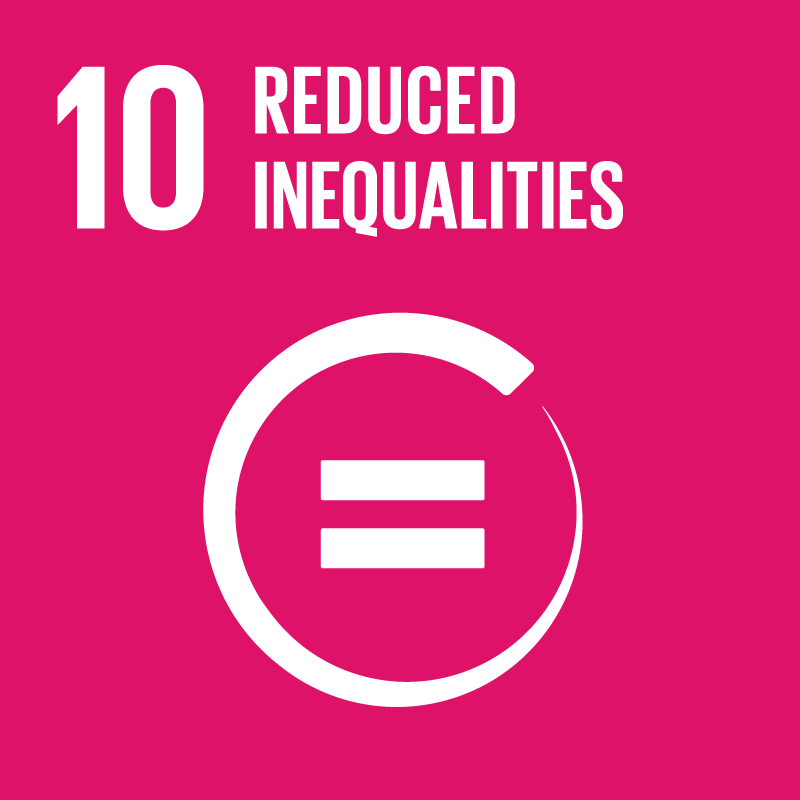
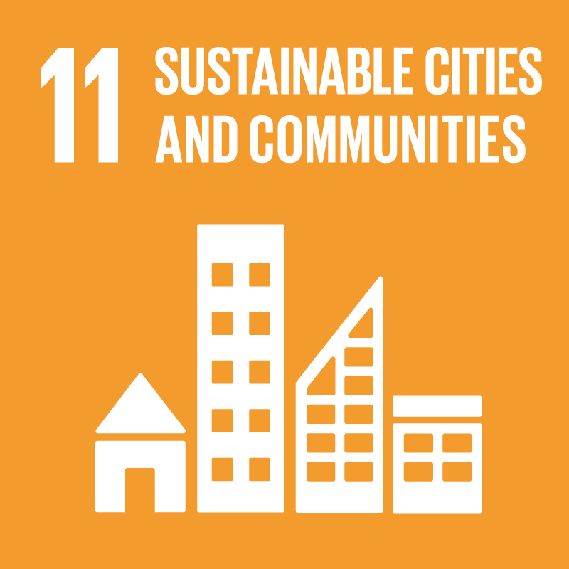
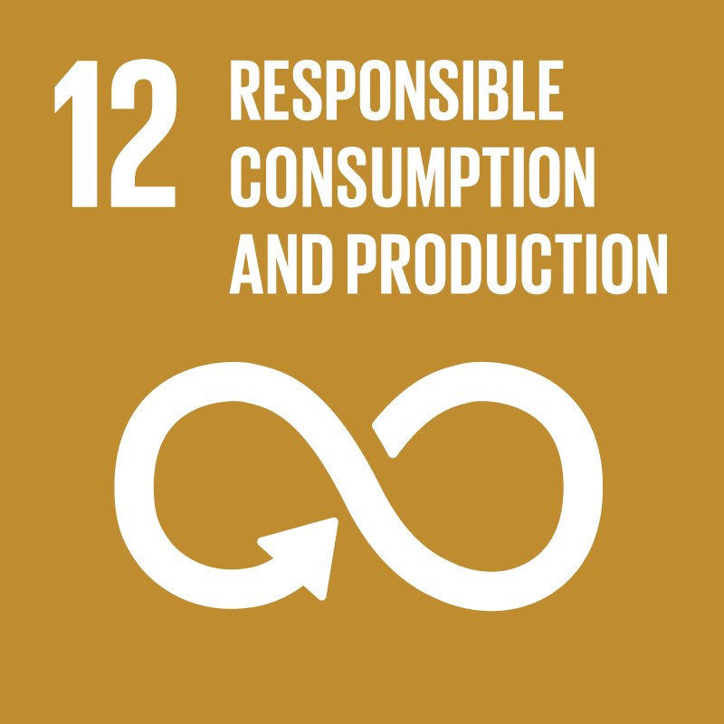
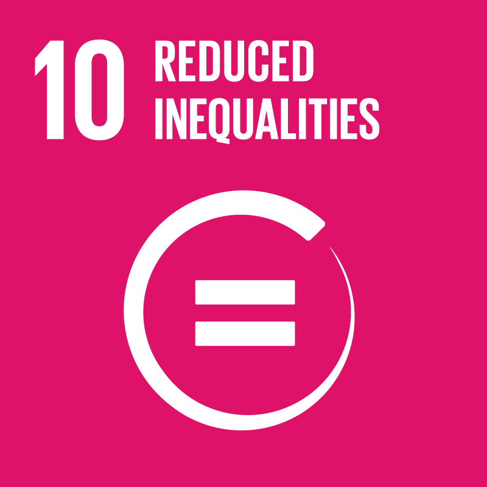
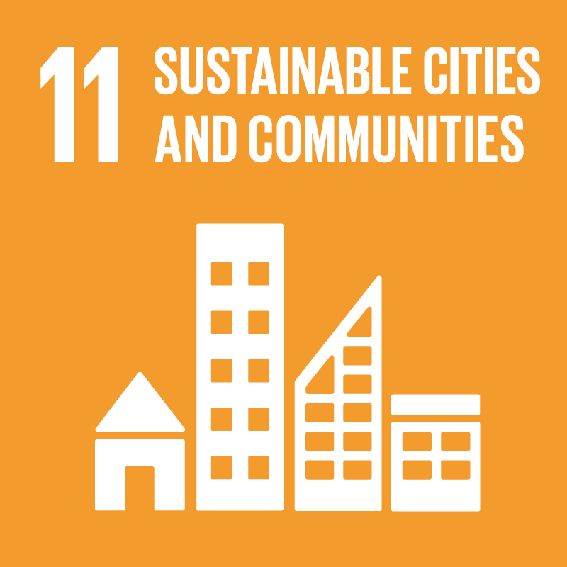
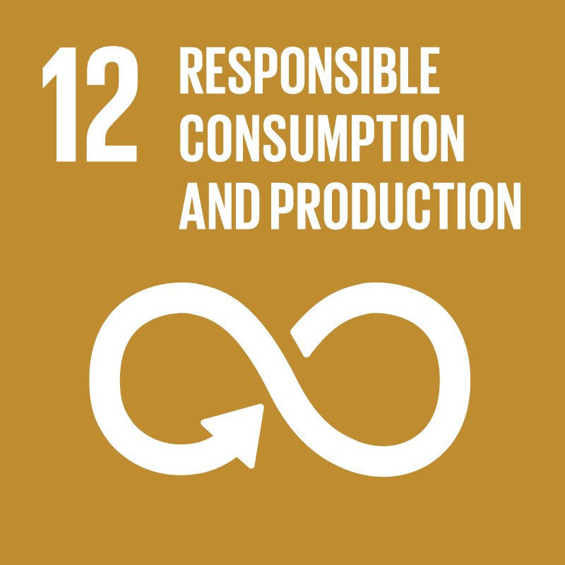
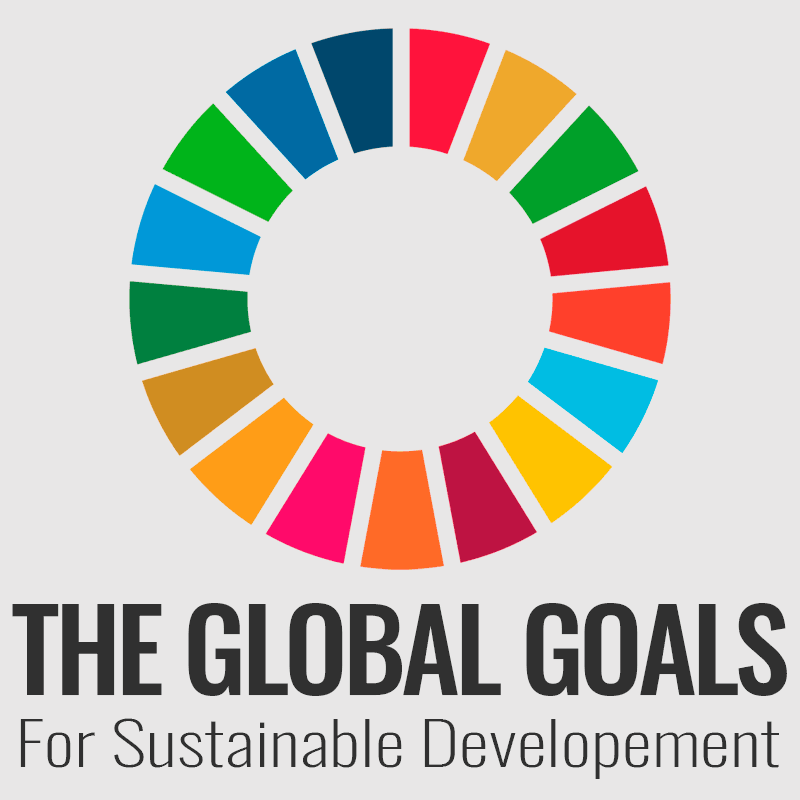
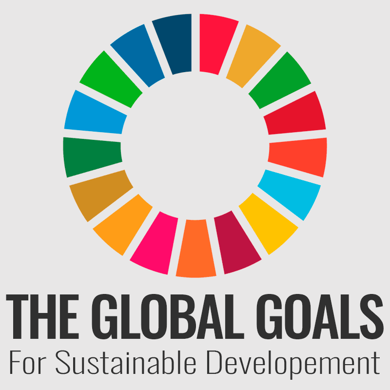

Verdensmålene forpligter.
Medlemslandende forpligter sig til helt at afskaffe fattigdom og sult i verden,
sikre god uddannelse og sundhed til alle, reducere ulighed, fremme ligestilling, anstændige jobs, bæredygtig vækst og forbrug.
Den nye dagsorden anerkender således at social, økonomisk og miljømæssig udvikling, fred, sikkerhed og internationalt samarbejde er tæt forbundet,
og at det kræver en integreret indsats at opnå holdbare udviklingsresultater.
Verdensmålene gælder alle.
Målene gælder alle lande - både rige og fattige - dvs. de er universelle.
Udfordringer som social, økonomisk marginalisering, stigende ulighed, fødevareusikkerhed,
ulig adgang til grundlæggende naturressourcer,og har regionale og globale konsekvenser.
Det er derfor afgørende at alle lande leverer og løfter opgaven i fællesskab.
En overordnet udfordring er, at der mangler et mere nuanceret syn på
sammenhængen mellem vækst og bæredygtighed. Vægtning mellem økonomisk vækst og påvirkninger af miljø og samfund.
Opretholdes den nuværende globale, materielle vækst, øges presset på jordens ressourcer.
De livsunderstøttende økosystemer bliver i stigende grad overbelastet, og uligheden i verden vil blive større.

I 2030-dagsordenen er inkluderet princippet om ”leave no one behind”. Princippet tilsiger,
at alle lande skal opnå alle verdensmål, uden at nogen lades i stikken.
Arbejdet med verdensmålene skal begynde med, at de
fattigste og mest marginaliserede adresseres først.
Dette er et vigtigt princip, hvortil også efterlevelsen af og respekten for menneskerettigheder er altafgørende.
Med andre ord: “Leave No-One behind”.

Det første af FN’s verdensmål handler om at afskaffe verdens fattigdom inden 2030.
Det handler især om at give muligheder for mennesker i verdens fattigste lande.
Verdensbanken definerer ”ekstrem fattigdom” som en personlig indkomst på under 1,9 dollars om dagen – dvs. cirka 13 kroner.
En stor udfordring, men vi er allerede godt på vej.


 







 
